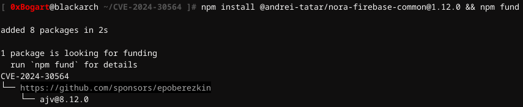
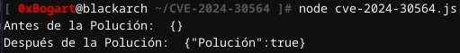
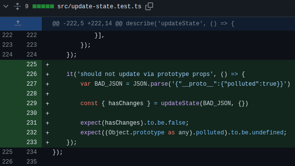
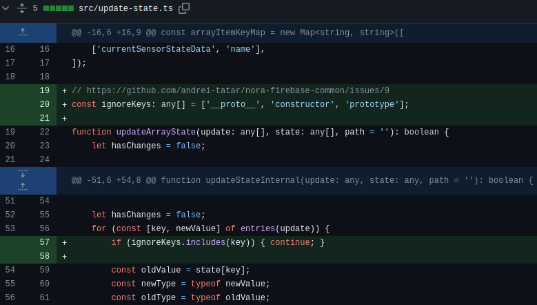

CVE-2024-30564 [PROTOTYPE POLLUTION]
@andrei-tatar/nora-firebase-common [CVE-2024-30564] Prototype Pollution
☠ Detalles de la Vulnerabilidad
☠ ¿Qué es Prototype Pollution?
☠ Descripción de la Vulnerabilidad [CVE-2024-30564]
☠ Explotando CVE-2024-30564 [PoC]
☠ Mitigación de la Vulnerabilidad en el Código Fuente
DETALLES DE LA VULNERABILIDAD
- Paquete: @andrei-tatar/nora-firebase-common [npm]
- Repositorio GitHub: https://github.com/andrei-tatar/nora-firebase-common
- GitHub Commit: https://github.com/andrei-tatar/nora-firebase-common/commit/bf30b75d51be04f6c1f884561a2
- Fecha de Publicación: 18 de Abril de 2024
- Versiones Afectadas: >= 1.0.41, < 1.12.3
- Versiones Parcheadas: 1.12.3
- Gravedad: Alta
- CVE ID: CVE-2024-30564
- Debilidades: CWE-1321
- Impacto: Un problema en andrei-tatar/nora-firebase-common entre v.1.0.41 y v.1.12.2 permite a un atacante remoto ejecutar código arbitrario a través de un script crafteado al parámetro updateState del método updateStateInternal.
¿QUÉ ES PROTOTYPE POLLUTION?
La Contaminación de Prototipos hace referencia a la capacidad de inyectar propiedades en los prototipos de construcción existentes en el lenguaje JavaScript, como pueden ser los objetos.
JavaScript permite alterar todos los atributos de los objetos, incluidos sus atributos mágicos como serían __proto__, constructor y prototype. Un atacante podría manipular estos atributos para sobrescribir o contaminar un prototipo de objeto de una aplicación JavaScript del objeto base inyectando otros valores, lo cual alteraría el comportamiento original de la aplicacion.
Las propiedades del Object.prototype son heredadas por todos los objetos JavaScript a través de la cadena de prototipos. Cuando esto ocurre, se produce una Denegación de Servicio [DoS] al provocar excepciones de JavaScript, o también se manipula el código fuente de la aplicación para forzar la ruta de código que el atacante inyecta, lo que conduce a la ejecución remota de código [RCE].
DESCRIPCIÓN DE LA VULNERABILIDAD
Todas las versiones de este módulo son vulnerables a la contaminación de prototipos a través de updateState.
El valor suministrado por el usuario a la función vulnerable y updateStateInternal copiará recursivamente todas las propiedades child, de la fuente [El valor suministrado por el usuario] al destino sin una validación de seguridad adecuada.
Un atacante puede explotar esta vulnerabilidad manipulando el Object.prototype incorporado a través de propiedades especiales como __proto__ o constructor.prototype.
Potencialmente conduce a la alteración del comportamiento de todos los objetos y, en consecuencia, el atacante escalará el ataque a una denegación de servicio [DoS], una ejecución remota de código [RCE] o a una escalada de privilegios.
EXPLOTANDO CVE-2024-30564 [PoC]
⦿ Crear el directorio de trabajo y el archivo cve-2024-30564.js para explotar prueba de concepto [PoC]
⦿ Instalar una versión vulnerable del paquete: npm install @andrei-tatar/nora-firebase-common@1.12.0 && npm fund

⦿ Ejecutar la PoC: node cve-2024-30564.js

Como puede verse, antes de la contaminación las llaves {} están vacías, y después de la contaminación almacenan la propiedad {"Polución":true} del objeto BAD_JSON.
El exploit importa el paquete @andrei-tatar/nora-firebase-common de manera asíncrona mediante la declaración import. Crea un objeto JSON malicioso llamado BAD_JSON con una propiedad __proto__ que contaminará al objeto victim.
Se define un objeto vacío llamado victim que será el objetivo de la contaminación de prototipo e imprime en consola su estado antes de realizar la contaminación.
Después llama a la función updateState del paquete @andrei-tatar/nora-firebase-common pasándole el objeto BAD_JSON.
MITIGACIÓN DE LA VULNERABILIDAD EN EL CÓDIGO FUENTE
En GitHub pueden verse las correcciones aplicadas al código fuente de los archivos update-state.test.ts y update-state.ts.
Ahora update-state.test.ts verifica que la función updateState no acepte actualizaciones que provengan de propiedades del prototipo __proto__. Esta implementación asegura que __proto__ ya no sea aceptado como una clave válida.

Y por otro lado, la implementación realizada en update-state.ts define el array ignoreKeys que contiene claves que no serán aceptadas durante la actualización de estado. Esto incluye '__proto__', 'constructor' y 'prototype', ya que son comunes en ataques de Prototype Pollution.
Así que antes de procesar cada clave en el objeto de actualización, verificará si la clave está en el array ignoreKeys. Si lo está, se omitirá esa clave y pasará a la siguiente.
